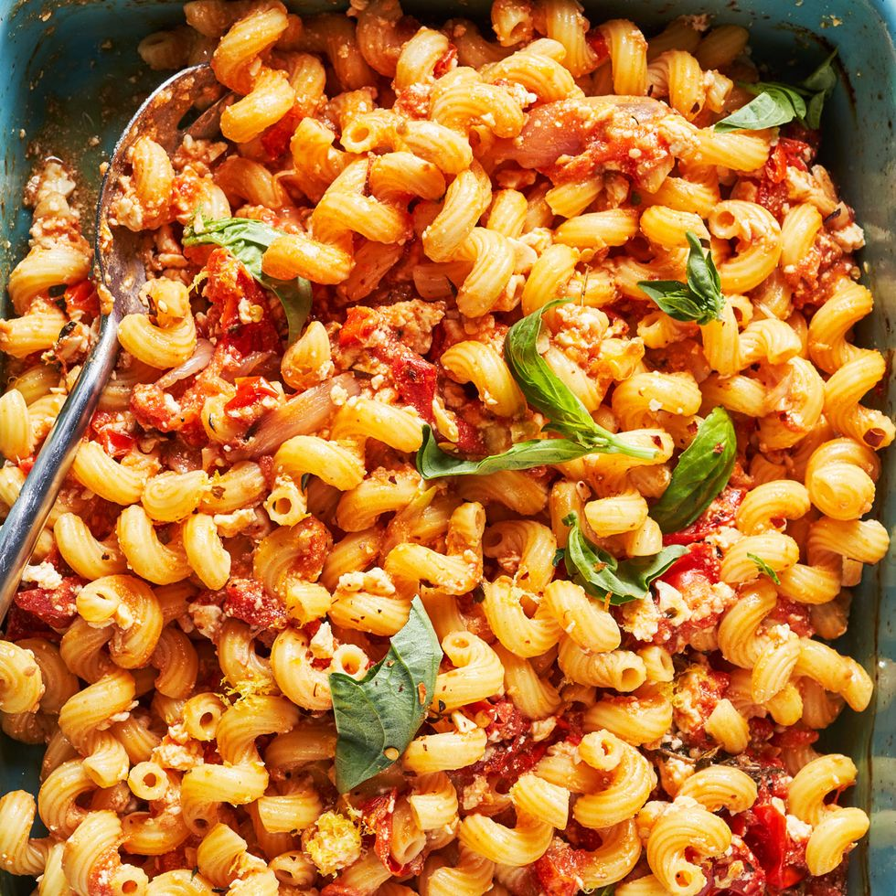

Tomato Feta Pasta

This meal is an excellent mediterrain taste for a weeknight. Its super easy to make and wont break the bank, plus, its elevated enough to serve on date night!
Ingredients
- 2 pts of cherry or grape tomatoes
- 1 quartered shallot
- 3 smashed cloves of garlic
- 1/2 cup extra virgin olive oil
- Kosher salt
- A pinch of red pepper flakes
- 1 8 oz block of feta cheese
- 3 sprigs of thyme
- 10 oz of elbow macaroni pasta (or whatever pasta you want)
- Zest of 1 lemon
- Fresh basil to garnish
Directions
- Preheat the oven to 400°F
- In a large ovenproof skillet, add the 2 pts of tomatoes, the quartered shallot, the 3 cloves of garlic, and all but 1 tbsp of the olive oil
- Season with a pinch of salt and red peppar flakes then toss to combine
- Put the block of feta in the middle of the skillet and drizzle with the remaining tbsp of oil
- Bake for 40-45 minutes, until the tomatoes are bursting and the feta is golden on top
- While that cooks, start boiling a pot of salted water and cook the past until it is al dente
- Make sure to save 1/2 cup of the pasta water when done cooking it
- Add everything to the skillet with the tomatoes and feta and stir to combine
- garnish with the fresh basil and enjoy!